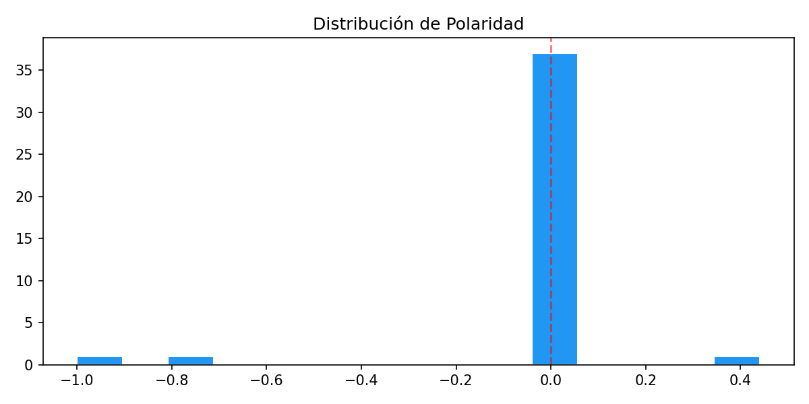
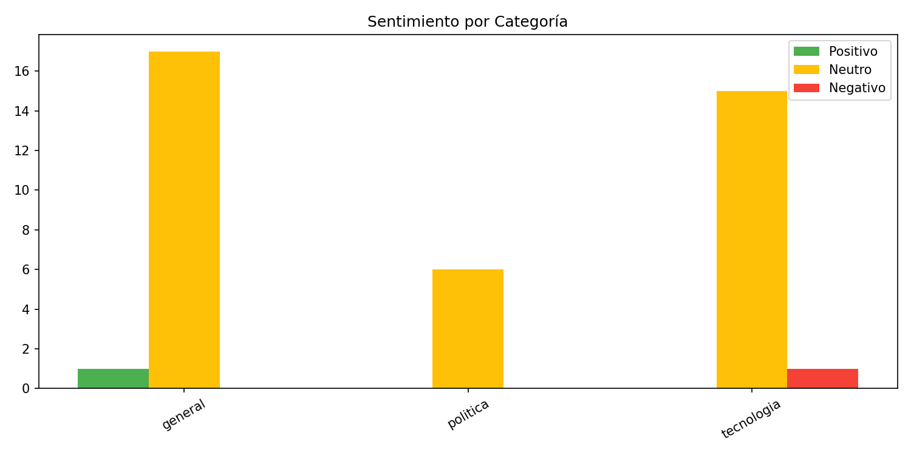
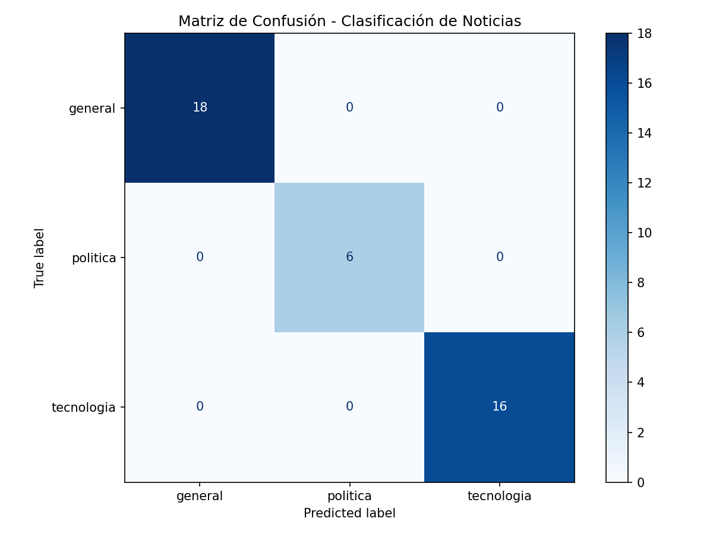

Gráficas




Generado: 2026-05-22 07:38 | Fuentes: 4 | 40 artículos



| Categoría | Artículos |
|---|---|
| general | 18 |
| tecnologia | 16 |
| politica | 6 |
Mostrando 20 de 40 artículos
Sistema de Monitoreo de Noticias Web 2026